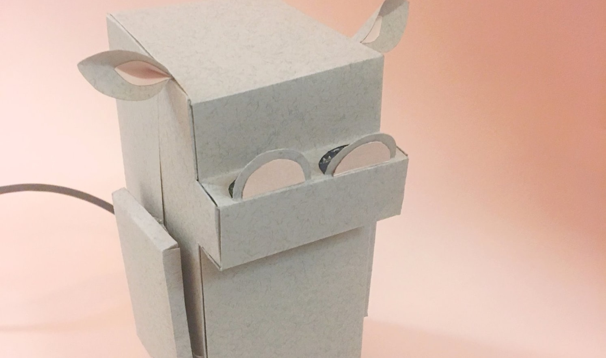
Data Driven Design
Role
Developer
Duration
1 Semester,
Fall 2016
Final Deliverable
Every good design decision starts with a real observation, not a mood board. This one started with a fake plant.
For a class assignment on data-driven design, my partner Kiersten and I built a sensor probe — sound, light, vibration, temperature/humidity, and motion — and hid it inside a potted plant on a graduate student's desk. Rather than ask people how they felt while studying, we let the room measure it, unattended, from 6pm to 9am.
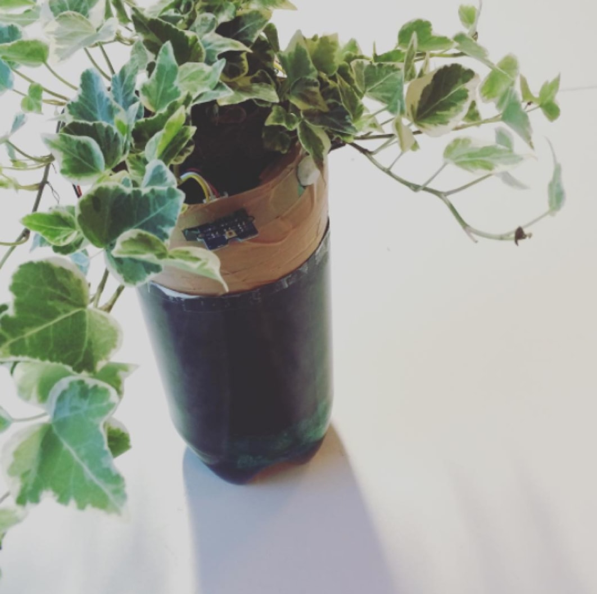
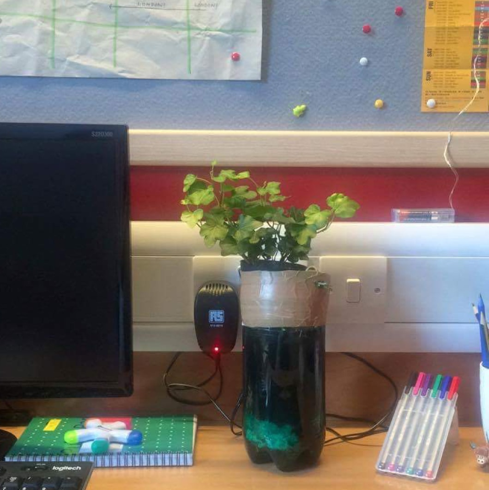
The histograms below plot every light and sound reading captured overnight. Both distributions cluster where you'd expect — a dim, quiet room — and then spike, hard, in the same narrow band.
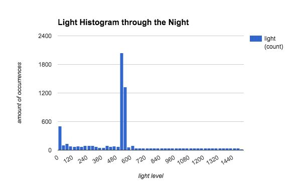
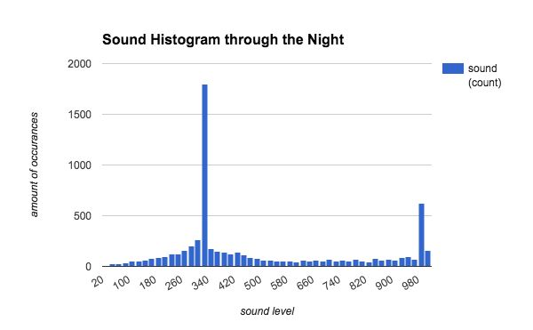
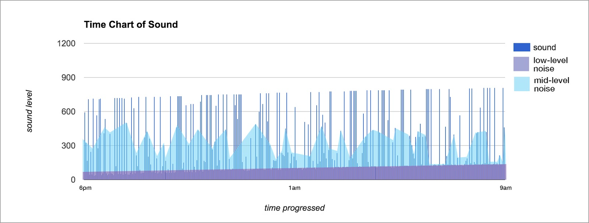
Read literally, it looked like the student pulled an all-nighter and had a rough one — spikes in sound loud enough to register as shouting, recurring for hours. Read skeptically, it looked like something else: the sensors themselves misfiring, mistaking their own noise for the room's.
The TurnThis is the moment that separates a data-collection exercise from a design project: we had two competing readings of the same evidence, and instead of picking one, we designed for both.
Rather than "fix" the ambiguity, we designed a product that dramatizes it. If a room goes dark and the sound sensor reads a spike, the device swears out loud — whether that spike is a stressed student or a glitchy microphone. It doesn't resolve the uncertainty. It performs it, in public, with personality.
Why This, Why NowThe concept borrows from two real cases of machines misreporting reality with total confidence — and people believing them anyway.
"Calculating a heart rate that's off by 20 or 30 beats per minute can be dangerous — especially for people at high risk of heart disease." Fitbit maintained its devices "are not intended to be scientific or medical devices." — CNBC, "Study claims Fitbit trackers are 'highly inaccurate'" (2016)
"Swearing can increase the effectiveness and persuasiveness of a message, especially when it is seen as a positive surprise. It might even work with politicians." — BBC Future, "The Surprising Benefits of Swearing" (2016)
Add in the Volkswagen emissions scandal — a machine engineered to misreport data convincingly — and a pattern emerges: inaccurate data, delivered with enough conviction, gets believed. RageBot takes that pattern and makes it a desk toy. If a device is going to lie to you, ours does it charmingly, and tells you it's lying.
The BuildWe swapped the plant for a hippo — friendlier, funnier, and a better fit for something meant to defuse stress rather than add to it. The servo-and-arm mechanism was sketched, dimensioned, cut as a paper net, and folded before a single wire went in.
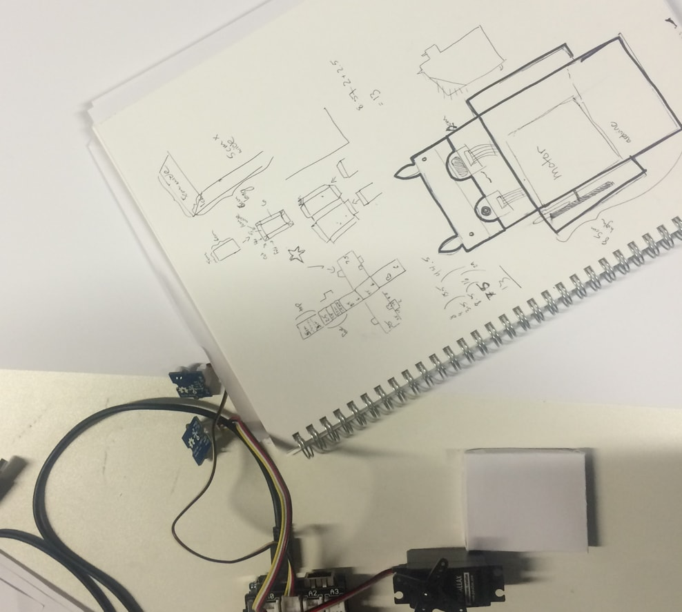
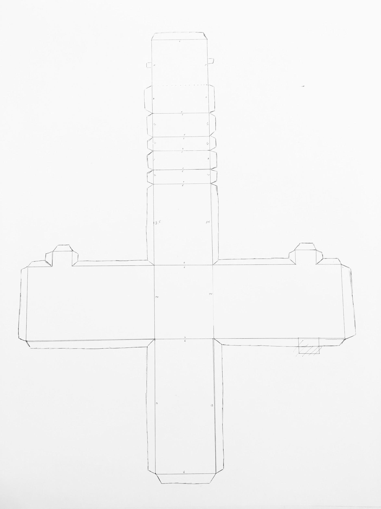
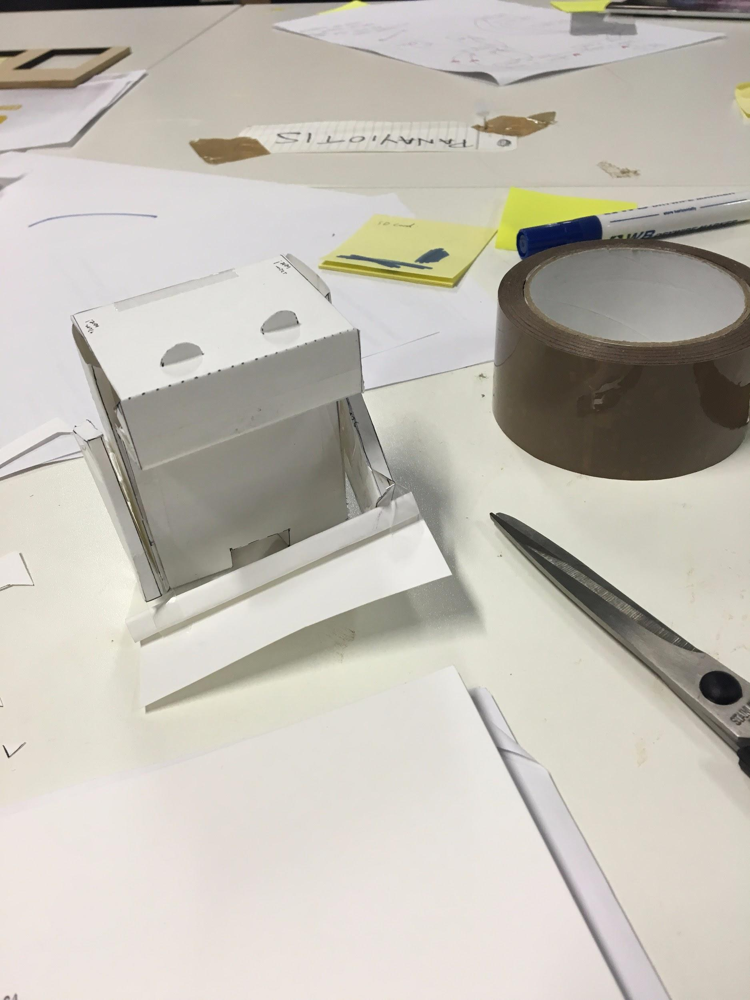
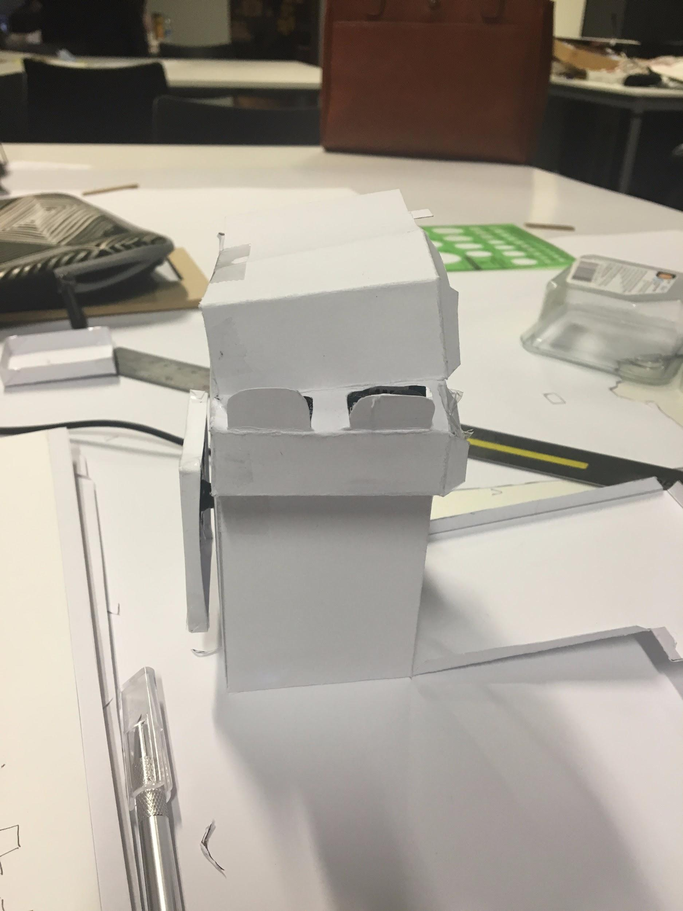
The finished RageBot sits on a desk like any other small object, until the lights go out and the sound sensor crosses a threshold — then it raises its arm, waves a little flag, and swears. It swears under the same conditions whether the "cause" is a stressed student or a misreading sensor, which is the entire point: the device never claims to know which one it is.
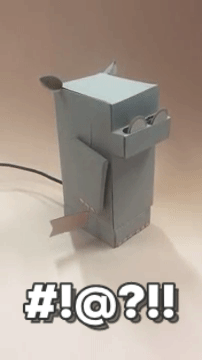
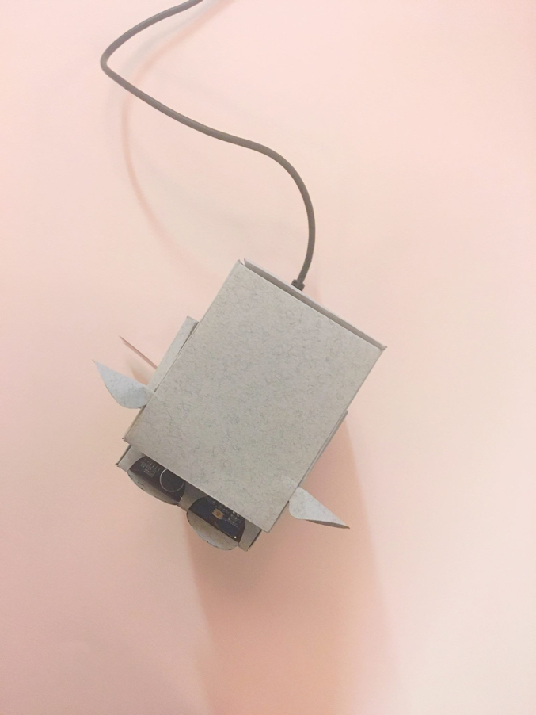
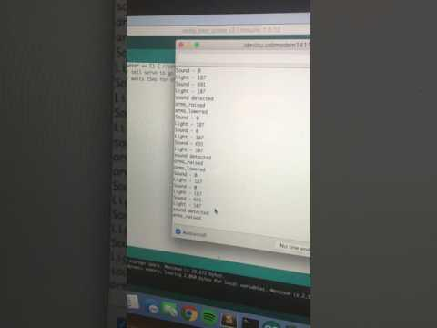
It's easy to read RageBot as a novelty — a swearing hippo, built for a class. Read closer, it's a compact demonstration of instincts that don't show up as neatly in a polished UI portfolio: